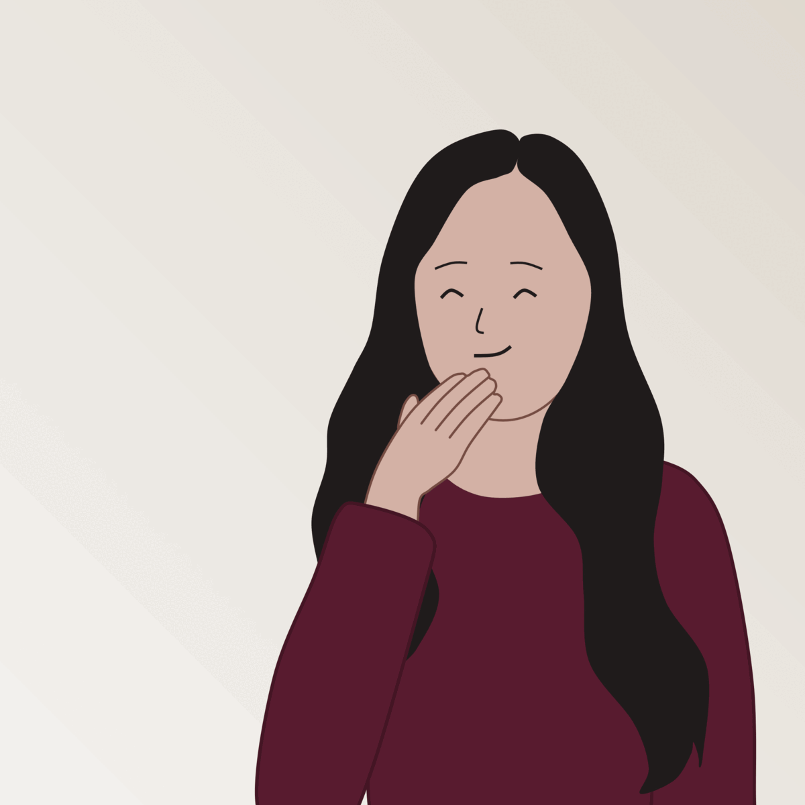
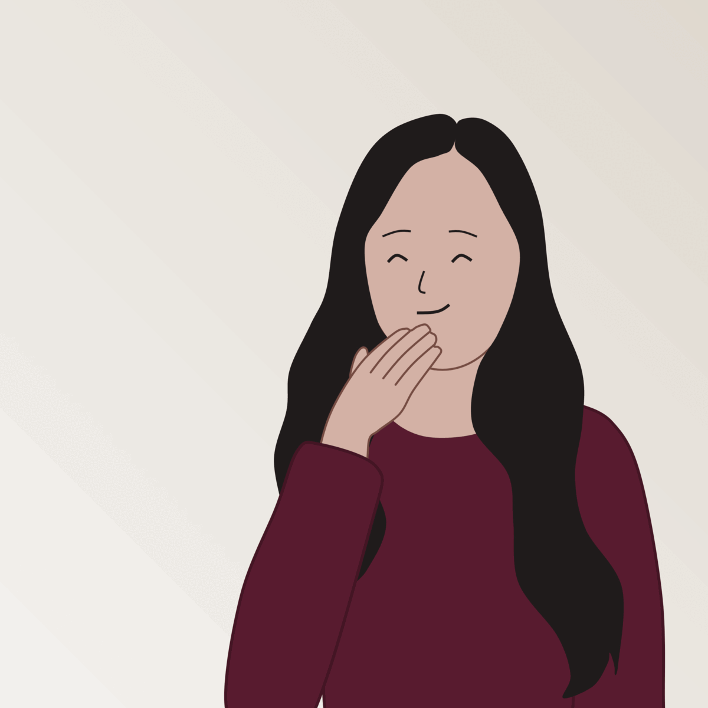

Congratulations, you're a BKT master!
Awesome job! You've completed all the BKT scenarios and attained mastery. We hope you learned something new today and enjoyed this introduction to ASL and BKT.
Awesome job! You've completed all the BKT scenarios and attained mastery. We hope you learned something new today and enjoyed this introduction to ASL and BKT.
Here are some resources if you'd like to learn more about ASL:
Thank you for completing this explainable! You may now close this tab and return to the Qualtrics survey.
Created by Catherine Yeh and Iris Howley, Williams College. Funding for this research was provided by the IIS:Cyber-Human Systems program: NSF CISE award number 1849984.